STEP 02
나올 땐 허리에 한 번
지퍼도 단추도 없습니다. 감아서 여미기만 하면 됩니다.
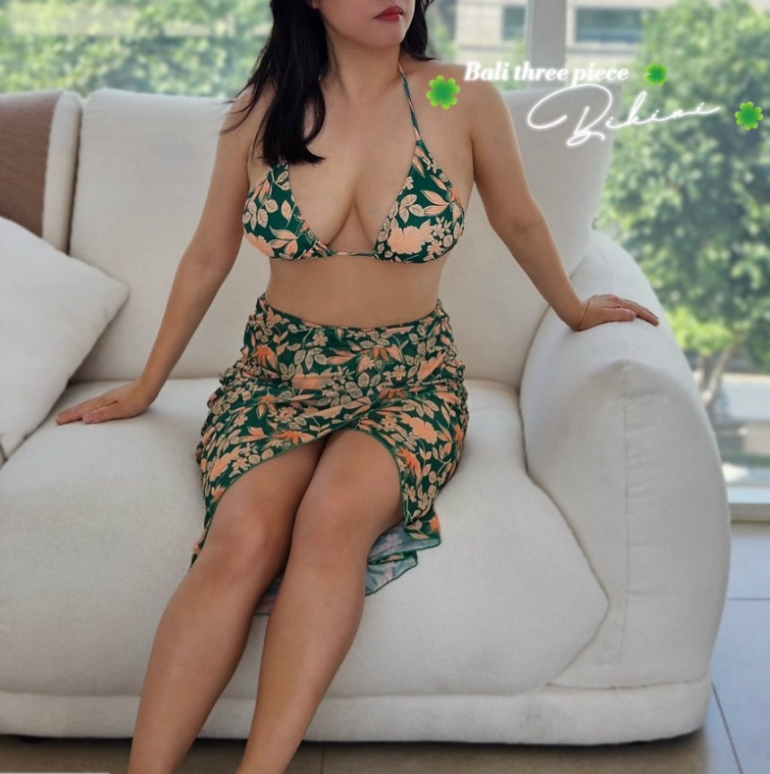
이제 그러지 마세요!
수영장에서 조식 테이블까지,
갈아입지 않고 그대로.
발리 쓰리피스 비키니에는
비키니와 같은 패턴으로 짠
메쉬 랩스커트가 함께 들어 있어요.
허리에 한 번 감으면 끝입니다.
커버업을 따로 사자니 아깝고
사둔 건 비키니와 색이 안 맞고
고민했다면.....
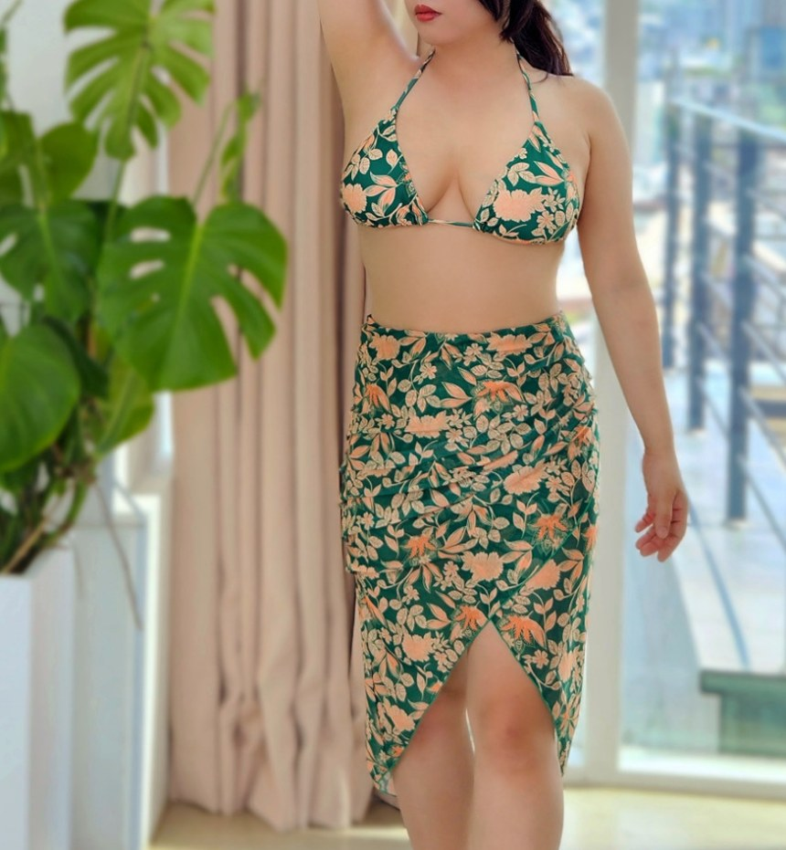
HOW TO WEAR
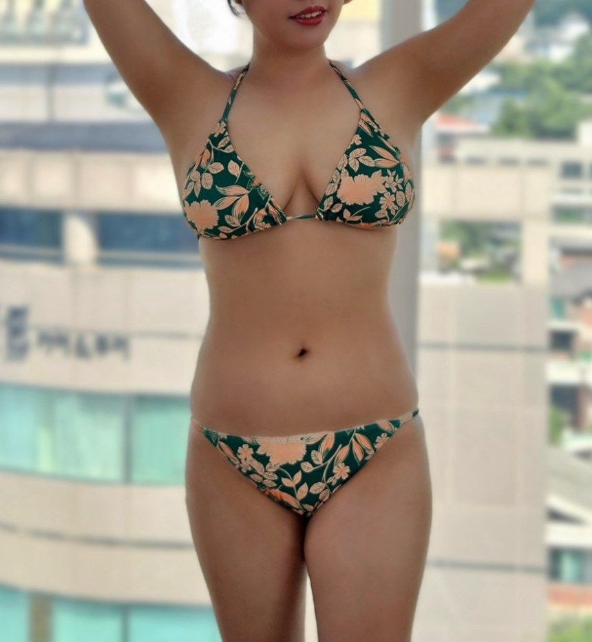
STEP 01
브라탑과 하의만 남기고 스커트는 벗어둡니다.
STEP 02
지퍼도 단추도 없습니다. 감아서 여미기만 하면 됩니다.
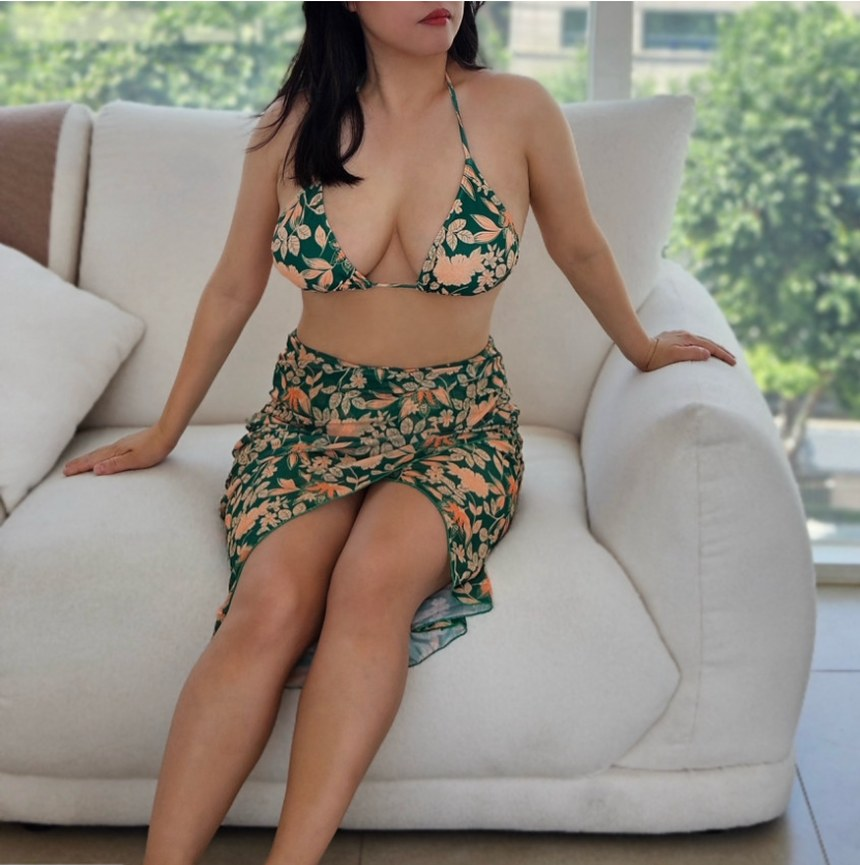
STEP 03
스커트를 내려 두면 식당이나 라운지에서도 어색하지 않아요.
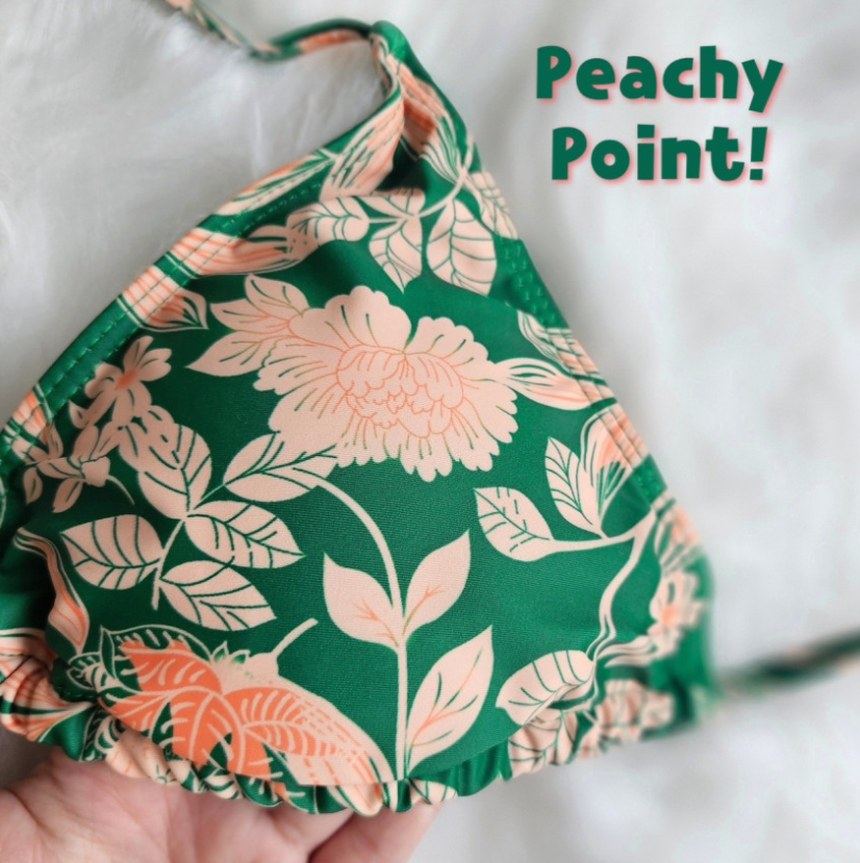
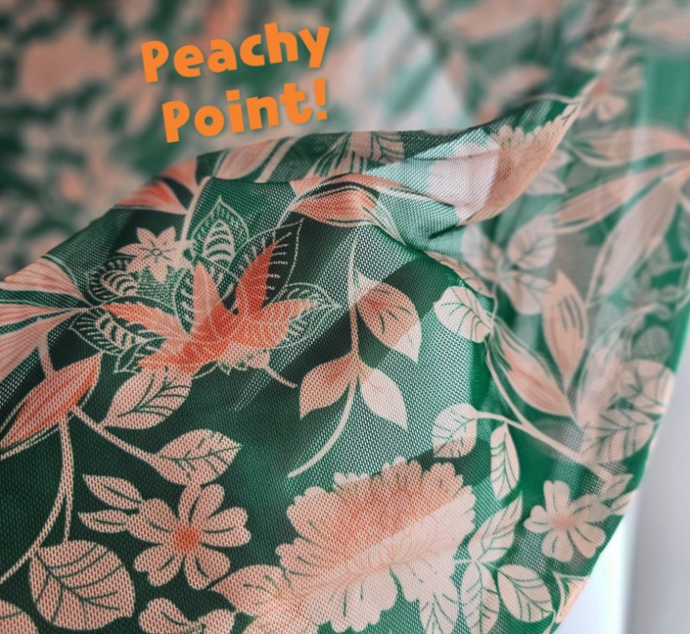

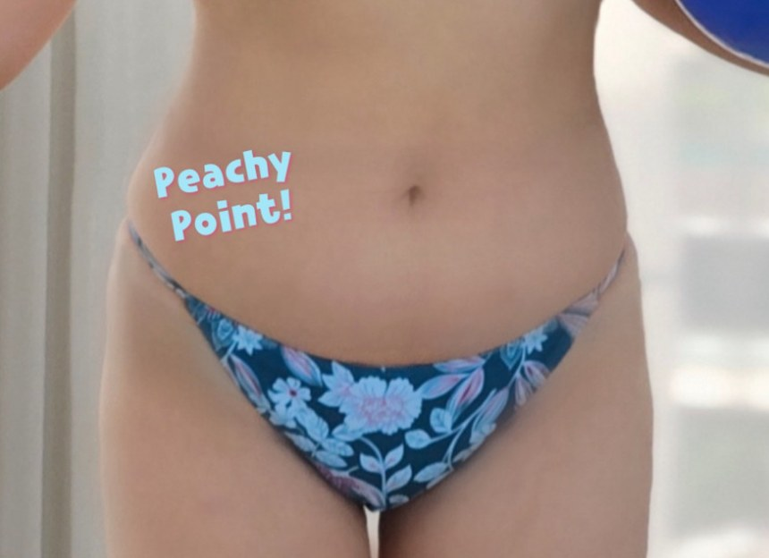
Q & A
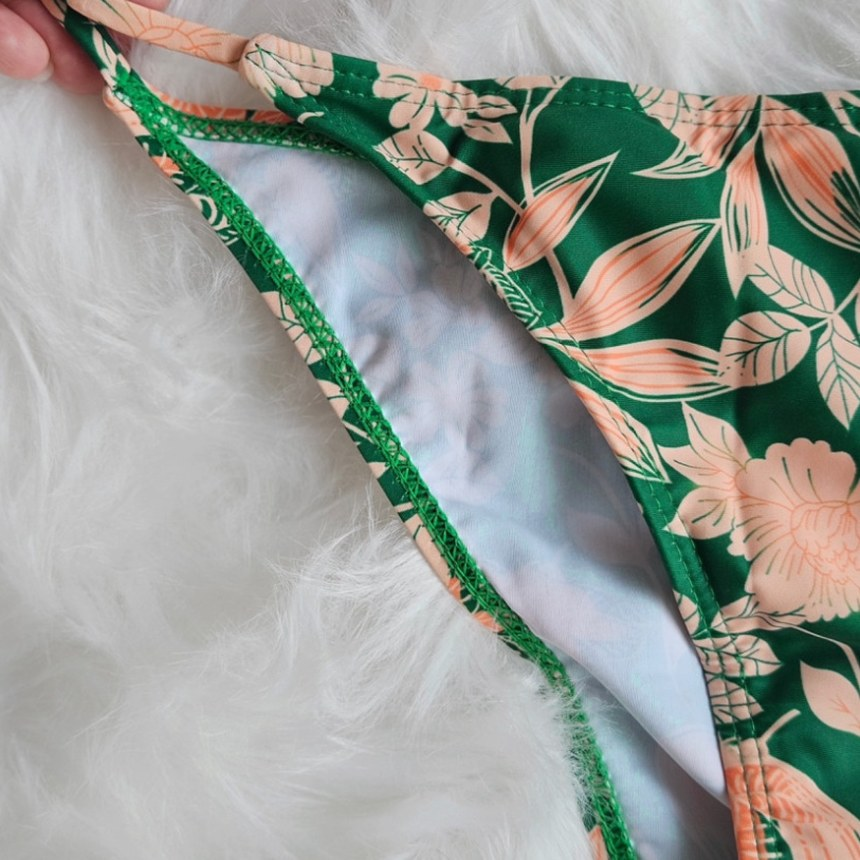
하의 안쪽 밝은 안감 한 겹
COLOR
싱그럽고 달큰한 살구그린
청량하게 가라앉은 블루
짙게 우거진 연두청록

햇살 아래에서 더 살아나는 살구그린
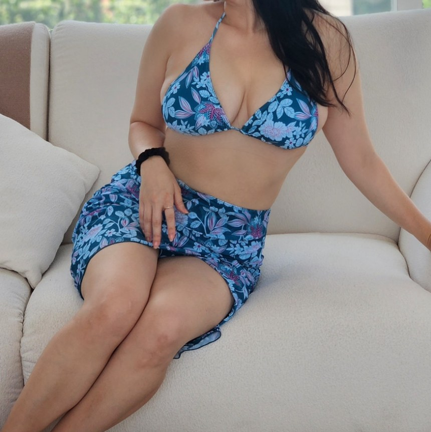
물빛과 나란히 놓이는 블루

그늘에서도 선명하게 남는 연두청록
MODEL CUT

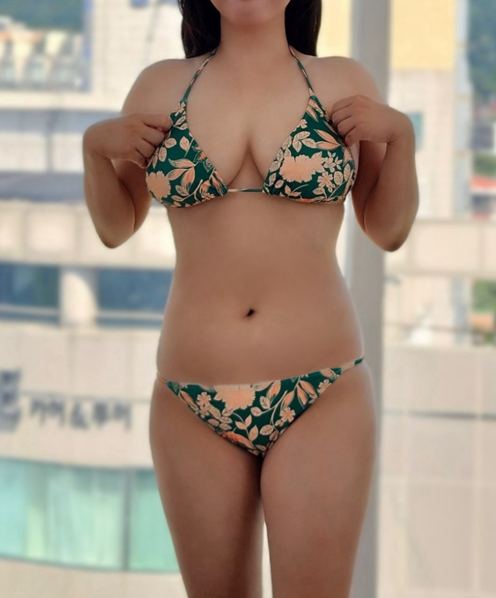


DETAIL CUT

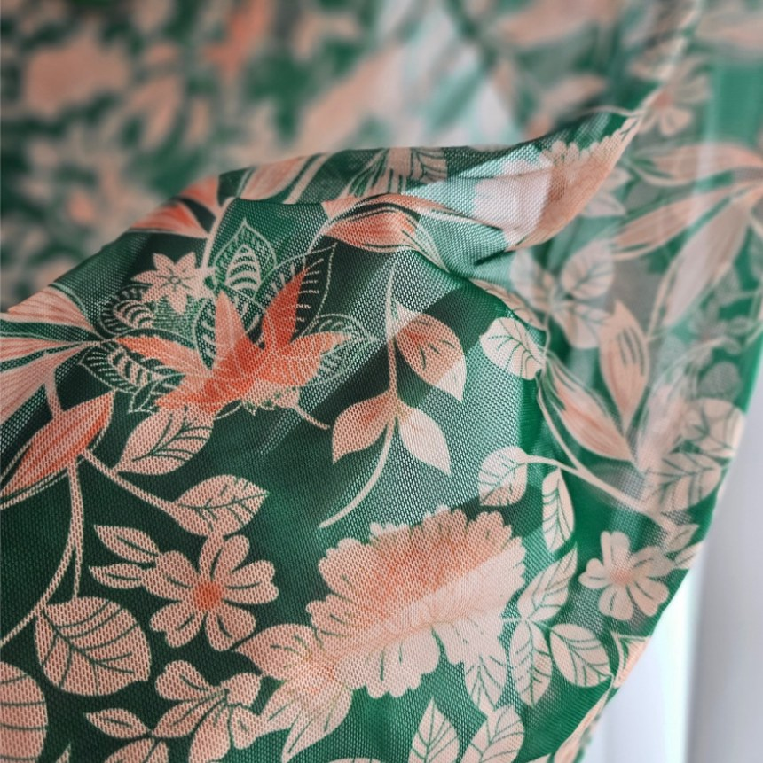
브라탑 · 하의 · 랩스커트 3피스 구성 — 살구그린
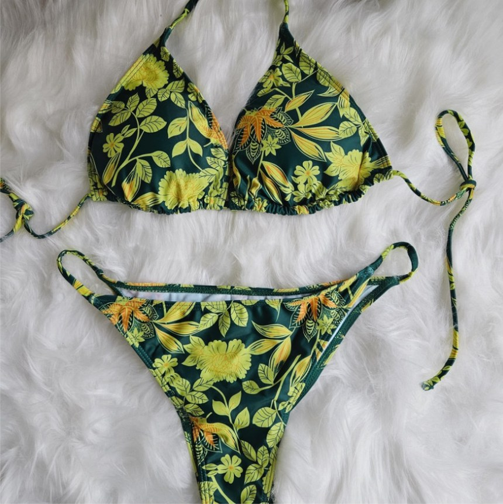
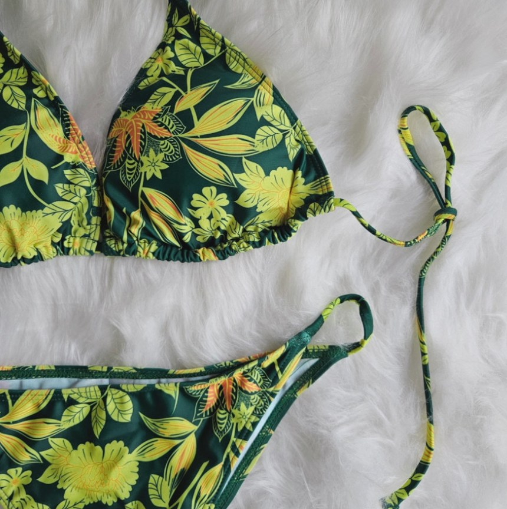
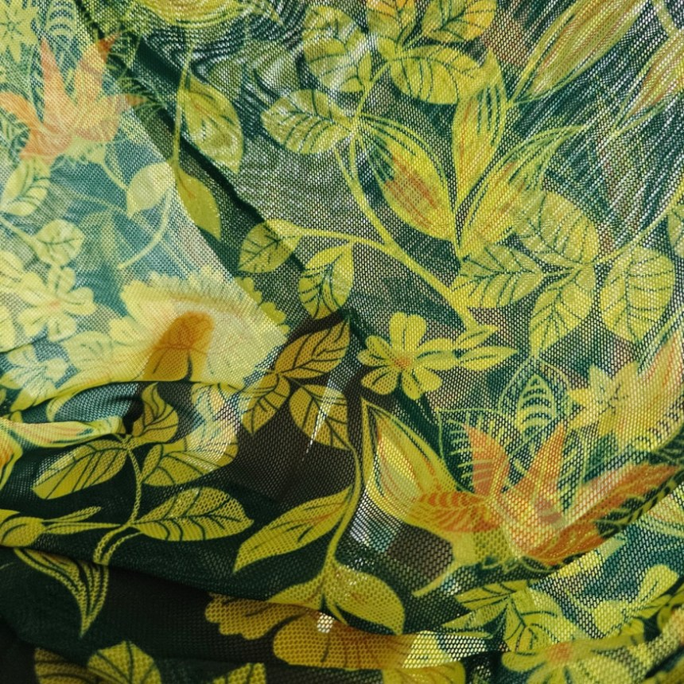

같은 구성, 다른 분위기 — 연두청록
INFORMATION
| 구성 | 브라탑 + 하의 + 랩스커트 (3피스) |
|---|---|
| 색상 | 살구그린 / 블루 / 연두청록 |
| 제품 소재 | ※ 판매자 확인 필요 |
| 치수 | ※ 판매자 확인 필요 |
| 제조자(수입자) | ※ 판매자 확인 필요 |
| 제조국 | ※ 판매자 확인 필요 |
| 제조연월 | ※ 판매자 확인 필요 |
| 세탁방법 및 취급 시 주의사항 | 하단 세탁 주의 참조 |
| 품질보증기준 | 관련 법 및 소비자분쟁해결기준에 따름 |
| A/S 책임자와 전화번호 | ※ 판매자 확인 필요 |